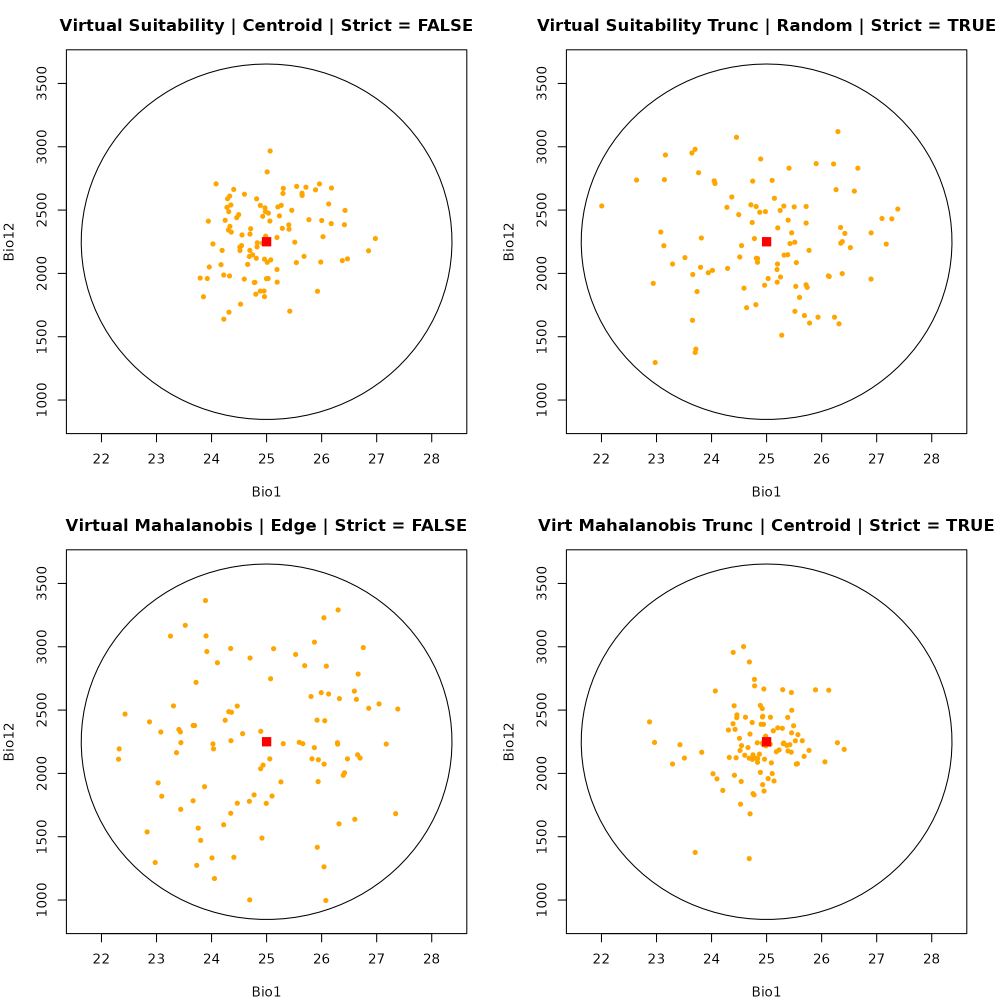
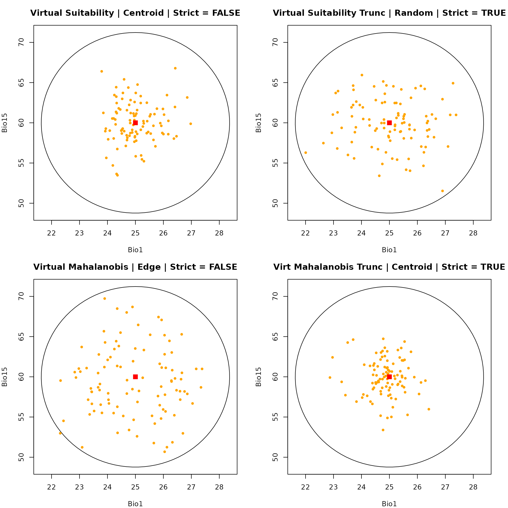

Sampling occurrence data with virtual data
Source:vignettes/sampling_virtual_data.Rmd
sampling_virtual_data.RmdDescription
Virtual species are highly useful for controlled, purely theoretical experiments in quantitative ecology.
This vignette covers the workflow for simulating virtual species data entirely within environmental space (E-Space). This bypasses the need for geographic rasters, allowing you to generate and sample occurrence points directly from the mathematical properties of a defined niche ellipsoid.
Defining the Niche Space
We define the fundamental niche based on our absolute environmental tolerances.
# Define environmental ranges (Min and Max)
range_df <- data.frame(bio_1 = c(22, 28),
bio_12 = c(1000, 3500),
bio_15 = c(50, 70))
# Build ellipsoid niche model
ell <- build_ellipsoid(range = range_df)
#> Starting: building ellipsoidal niche from ranges...
#> Step: computing covariance matrix...
#> Step: computing additional ellipsoidal niche metrics...
#> Done: created ellipsoidal niche.Virtual Data Generation
virtual_data() Instead of applying our niche to a
geographic map, we will simulate points drawn from the mathematical
distribution of the niche itself.
Key Arguments
object: AnicheR_ellipsoidobject.n: The number of virtual points to generate within the environmental space.truncate: Logical. IfTRUE, restricts the generated points to strictly fall within the ellipsoid’s confidence limits. IfFALSE, points are drawn from a standard multivariate normal distribution.-
effect: Dictates the point distribution pattern."direct": Clusters points near the optimal centroid."inverse": Pushes points toward the marginal edges."uniform": Distributes points evenly throughout the volume (requirestruncate = TRUE).
# Simulate 1,000 background virtual data points clustered near the center
virt_dat <- virtual_data(ell,
n = 1000,
truncate = FALSE,
effect = "direct",
seed = 1)Generating the Prediction Surface
Now we score our simulated virtual data points to calculate their
true habitat suitability and Mahalanobis distance. Notice that we pass
our data frame (virt_dat) into the newdata
argument instead of a raster.
# Predict suitability directly onto the virtual data frame
pred <- predict(ell,
newdata = virt_dat,
include_mahalanobis = TRUE,
include_suitability = TRUE,
suitability_truncated = TRUE,
mahalanobis_truncated = TRUE,
keep_data = TRUE) # Keeps the environmental variables attached
#> Starting: suitability prediction using newdata of class: matrix, array...
#> Step: Using 3 predictor variables: bio_1, bio_12, bio_15
#> Done: Prediction completed successfully. Returned columns: bio_1, bio_12, bio_15, Mahalanobis, suitability, Mahalanobis_trunc, suitability_truncSampling Virtual Data
Objective: To sample virtual occurrence points from a non-spatial prediction data frame.
This function acts as the data-frame equivalent to
sample_data(). It inherently supports the same weighting
rules ("centroid", "edge",
"random") and methods ("suitability",
"mahalanobis").
Key Arguments
virtual_prediction: The data frame output from thepredict()function.prediction_layer: The name of the column containing the prediction metric to use as a sampling weight.sampling: Spatial bias of the sampling probability ("centroid","edge", or"random").method: Weighting interpretation ("suitability"or"mahalanobis").strict: Logical. IfTRUE, removes zero-valued rows before sampling. IfNULL, auto-detects based on the column name or presence of zeros/NAs.
Generating the Samples
# Scenario 1: Suitability | Centroid | Strict = FALSE
occ_virt_suit_cent <- sample_virtual_data(n_occ = 100,
object = ell,
virtual_prediction = pred, prediction_layer = "suitability",
sampling = "centroid",
method = "suitability",
seed = 123)
#> Starting: sample_virtual_data()
#> Warning in resolve_prediction(virtual_prediction, prediction_layer):
#> 'prediction' is a data.frame, and it is missing 'x' and 'y', results wont show
#> geographical connections.
#> Done: sampled 100 points.
# Scenario 2: Suitability Truncated | Random | Strict = TRUE
occ_virt_suit_trunc_rand <- sample_virtual_data(n_occ = 100,
object = ell,
virtual_prediction = pred,
prediction_layer = "suitability_trunc",
sampling = "random",
method = "suitability",
strict = TRUE,
seed = 123)
#> Starting: sample_virtual_data()
#> Warning in resolve_prediction(virtual_prediction, prediction_layer):
#> 'prediction' is a data.frame, and it is missing 'x' and 'y', results wont show
#> geographical connections.
#> Done: sampled 100 points.
# Scenario 3: Mahalanobis | Edge | Strict = FALSE
occ_virt_maha_edge <- sample_virtual_data(n_occ = 100,
object = ell,
virtual_prediction = pred, prediction_layer = "Mahalanobis",
sampling = "edge",
method = "mahalanobis",
seed = 123)
#> Starting: sample_virtual_data()
#> Warning in resolve_prediction(virtual_prediction, prediction_layer):
#> 'prediction' is a data.frame, and it is missing 'x' and 'y', results wont show
#> geographical connections.
#> Done: sampled 100 points.
# Scenario 4: Mahalanobis Truncated | Centroid | Strict = TRUE
occ_virt_maha_trunc_cent <- sample_virtual_data(n_occ = 100,
object = ell,
virtual_prediction = pred, prediction_layer = "Mahalanobis_trunc",
sampling = "centroid",
method = "mahalanobis",
strict = TRUE,
seed = 123)
#> Starting: sample_virtual_data()
#> Warning in resolve_prediction(virtual_prediction, prediction_layer):
#> 'prediction' is a data.frame, and it is missing 'x' and 'y', results wont show
#> geographical connections.
#> Done: sampled 100 points.Visualizing in E-Space
Because our data points are already defined by their environmental values, we do not need to extract raster data. We can plot them directly into E-Space.
Dimension 1: Bio1 vs. Bio12
par(mfrow = c(2, 2), mar = c(4, 4, 3, 2))
# Plot 1: Suitability | Centroid | Strict = FALSE
plot_ellipsoid(ell, dim = c(1, 2), pch = ".", col_bg = "#9a9797",
xlab = "Bio1", ylab = "Bio12", main = "Virtual Suitability | Centroid | Strict = FALSE")
add_data(occ_virt_suit_cent, x = "bio_1", y = "bio_12", pts_col = "orange", pch = 20)
add_data(as.data.frame(t(ell$centroid)), x = "bio_1", y = "bio_12", pts_col = "red", pch = 15, cex = 1.5)
# Plot 2: Suit Truncated | Random | Strict = TRUE
plot_ellipsoid(ell, dim = c(1, 2), pch = ".", col_bg = "#9a9797",
xlab = "Bio1", ylab = "Bio12", main = "Virtual Suitability Trunc | Random | Strict = TRUE")
add_data(occ_virt_suit_trunc_rand, x = "bio_1", y = "bio_12", pts_col = "orange", pch = 20)
add_data(as.data.frame(t(ell$centroid)), x = "bio_1", y = "bio_12", pts_col = "red", pch = 15, cex = 1.5)
# Plot 3: Mahalanobis | Edge | Strict = FALSE
plot_ellipsoid(ell, dim = c(1, 2), pch = ".", col_bg = "#9a9797",
xlab = "Bio1", ylab = "Bio12", main = "Virtual Mahalanobis | Edge | Strict = FALSE")
add_data(occ_virt_maha_edge, x = "bio_1", y = "bio_12", pts_col = "orange", pch = 20)
add_data(as.data.frame(t(ell$centroid)), x = "bio_1", y = "bio_12", pts_col = "red", pch = 15, cex = 1.5)
# Plot 4: Mahalanobis Truncated | Centroid | Strict = TRUE
plot_ellipsoid(ell, dim = c(1, 2), pch = ".", col_bg = "#9a9797",
xlab = "Bio1", ylab = "Bio12", main = "Virt Mahalanobis Trunc | Centroid | Strict = TRUE")
add_data(occ_virt_maha_trunc_cent, x = "bio_1", y = "bio_12", pts_col = "orange", pch = 20)
add_data(as.data.frame(t(ell$centroid)), x = "bio_1", y = "bio_12", pts_col = "red", pch = 15, cex = 1.5)
dev.off()
#> null device
#> 1Dimension 2: Bio1 vs. Bio15
par(mfrow = c(2, 2), mar = c(4, 4, 3, 2))
# Plot 1: Suitability | Centroid | Strict = FALSE
plot_ellipsoid(ell, dim = c(1, 3), pch = ".", col_bg = "#9a9797",
xlab = "Bio1", ylab = "Bio15", main = "Virtual Suitability | Centroid | Strict = FALSE")
add_data(occ_virt_suit_cent, x = "bio_1", y = "bio_15", pts_col = "orange", pch = 20)
add_data(as.data.frame(t(ell$centroid)), x = "bio_1", y = "bio_15", pts_col = "red", pch = 15, cex = 1.5)
# Plot 2: Suit Truncated | Random | Strict = TRUE
plot_ellipsoid(ell, dim = c(1, 3), pch = ".", col_bg = "#9a9797",
xlab = "Bio1", ylab = "Bio15", main = "Virtual Suitability Trunc | Random | Strict = TRUE")
add_data(occ_virt_suit_trunc_rand, x = "bio_1", y = "bio_15", pts_col = "orange", pch = 20)
add_data(as.data.frame(t(ell$centroid)), x = "bio_1", y = "bio_15", pts_col = "red", pch = 15, cex = 1.5)
# Plot 3: Mahalanobis | Edge
plot_ellipsoid(ell, dim = c(1, 3), pch = ".", col_bg = "#9a9797",
xlab = "Bio1", ylab = "Bio15", main = "Virtual Mahalanobis | Edge | Strict = FALSE")
add_data(occ_virt_maha_edge, x = "bio_1", y = "bio_15", pts_col = "orange", pch = 20)
add_data(as.data.frame(t(ell$centroid)), x = "bio_1", y = "bio_15", pts_col = "red", pch = 15, cex = 1.5)
# Plot 4: Mahalanobis Truncated | Centroid | Strict = TRUE
plot_ellipsoid(ell, dim = c(1, 3), pch = ".", col_bg = "#9a9797",
xlab = "Bio1", ylab = "Bio15", main = "Virt Mahalanobis Trunc | Centroid | Strict = TRUE")
add_data(occ_virt_maha_trunc_cent, x = "bio_1", y = "bio_15", pts_col = "orange", pch = 20)
add_data(as.data.frame(t(ell$centroid)), x = "bio_1", y = "bio_15", pts_col = "red", pch = 15, cex = 1.5)
dev.off()
#> null device
#> 1A Note on G-Space
Because the virtual_data() function generates points
purely based on statistical distributions within environmental
dimensions (e.g., Temperature and Precipitation), these points
do not possess spatial coordinates (Longitude/Latitude).
Consequently, pure virtual species simulated via this method exist exclusively in E-Space and cannot be directly plotted onto a geographic map (G-Space) without first projecting the niche model onto a physical landscape raster.